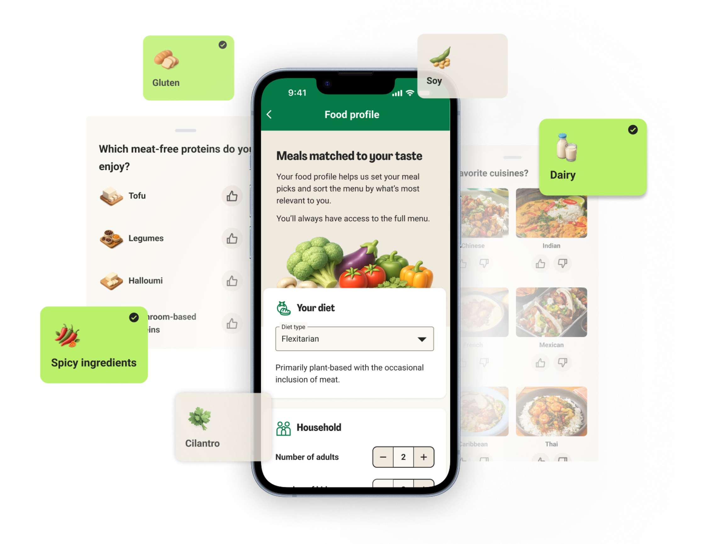
Platform
Web and mobile App
15 markets across 5 brands
AI workflows
AI-assisted prototyping
and workflow automation
Timeline
2025 Q4 - Present
Product active and scaling
Adoption
25% completion pre-promotion
70%+ expected post-promotion
Role
Leading Customer profile UX
Contents
My role
I led the design of Food Profile from scratch - there was no prior version to build on. I worked with the personalization team to define what preference data to collect and how to structure it, ran user research to understand how customers thought about their food preferences, owned the design across all platforms, and navigated the complexity of shipping a single experience across five international HelloFresh brands and fifteen markets.
Challenge
Every HelloFresh customer received the same experience regardless of who they were. Menu personalization came down to a single generic preference setting - a dropdown with a handful of broad categories - and everyone in that bucket got the same menu ranking and the same pre-selected meals. For customers who had been ordering for months or years, this was increasingly frustrating. They felt like strangers to a service they used every week. There was no way to tell HelloFresh what they actually liked, what they'd never eat, or what kind of cooking they wanted to do - and no sign that HelloFresh was learning anything about them over time. Food Profile was the response to that: a way to finally let customers express who they are, and give HelloFresh the signal it needed to treat them accordingly.
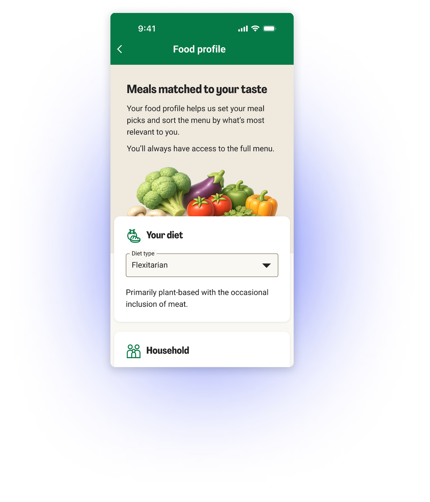
Preview prototypeSolution
We designed Food Profile, a centralized preference system where customers can define and manage their food tastes.
Customers can:
After updating their profile, personalization is applied immediately, adjusting the menu ranking while keeping the full menu available at all times.
This allows customers to discover relevant meals without losing control over their selection.
Impact
Customer Impact
Food Profile helped customers better tailor their experience to their preferences, making meal selection more relevant and easier to navigate.
We observed that when customers visited the Food Profile page, they showed strong intent - many completed most or all questions in a single session, which was an unexpected but consistent behavior. This indicated that customers clearly understood the value of the feature.
As soon as customers saw their menus adapting based on their preferences, their motivation to complete the profile increased further. This created a more engaging and personalized experience without restricting choice.
Business Impact
The main KPI for Food Profile is profile completion rate, as it directly drives the effectiveness of personalization.
In the early phase, we focused on building a strong foundation rather than actively pushing adoption. Even without prompting or marketing the feature, we saw a natural completion rate of up to 20%, validating strong product-market fit.
The feature was first released incrementally to US customers across app and web, where we immediately saw positive engagement. Based on early success, we scaled to 100% of US users, followed by rollout to Factor US customers and additional HelloFresh markets.
With upcoming efforts to actively prompt users, we expect to reach 50%+ completion rate, improving personalization at scale and supporting long-term retention and customer value.
Research
I partnered closely with the UX research team throughout, starting with a card sorting exercise to understand how customers mentally grouped food preferences, subscription settings, and related options. Those findings directly shaped the structure of the Food Profile categories.
During early design iterations I ran concept and usability sessions to observe how customers interacted with the feature and identify what needed refinement before release.
After launch, I set up Sprig session recordings to monitor real customer behaviour and surface opportunities for further improvement and together with UX researchers we are preparing for food profile and personalisation moderated study.
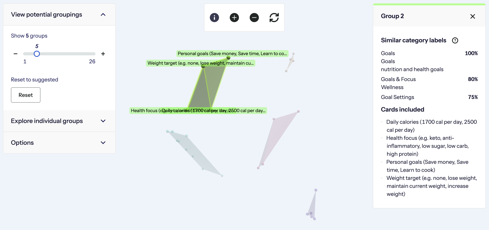
Card sorting results - categories clustering
Design process
Our team was created to address a growing gap in the product: poor food recommendations.
As HelloFresh expanded the menu from around 100 to 500 recipes per week, strong personalization became critical to avoid overwhelming customers.
The design process included:
AI workflows
During the Food Profile project, AI became an important part of my workflow.
I used tools such as Vercel, Figma Make, and Claude to quickly prototype early ideas and explore different design directions. This helped move the design process into a rapid exploration phase and enabled productive discussions with the team early on.
For higher fidelity work, I used Claude Code to review designs for accessibility and design system compliance. This helped me prepare more informed discussions with both the design system team and developers before implementation.
I also used Claude to support writing acceptance criteria, preparing testing scenarios, and analyzing early performance signals after release.
For UX writing, I created initial drafts of copy proposals before reviewing them with copywriters.
Overall, AI tools became a practical part of my workflow, helping me move faster, explore more ideas, and support clearer collaboration with product and engineering teams.
How personalization works
Personalization combines two types of signals:
Explicit signals:
Information customers provide directly: Diet preferences, Household size, Allergies, Cuisines, ect.
Implicit signals:
Behavioral data gathered from usage: Recipes ordered, Recipes skipped, Weekly selections, Meal ratings, ect.
These signals are used to score recipes and dynamically rank the menu and pre-select weekly subscription meals.
Relevant meals appear higher in the menu while still keeping all recipes available.
This approach avoids over-filtering and allows flexibility when customer behavior differs from stated preferences.
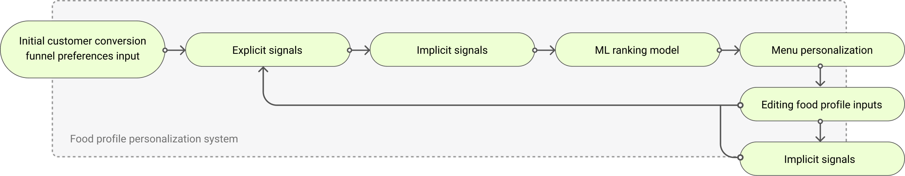
Problem solving
Design system inconsistencies
The HelloFresh design system supports 9 brands, multiple platforms (React Native and Web), and over 15 international languages. While the system is mature, it is still evolving, which sometimes leads to component and pattern inconsistencies.
During this project I addressed several of these gaps while also contributing improvements back to the design system.
One example was introducing a unified Save pattern. I reviewed existing Save interactions across the platform and proposed a consistent solution: a sticky bottom Save bar for settings. This pattern was implemented for both App and Web, improving consistency across platforms.
Another example was the attributes selection component. In the MVP we reused an existing component, but its behavior was limited and not fully suited for the feature. I proposed a new component designed to work across both Web and App, while also being reusable in other settings sections.
Save pattern
Inconsistent Setting saving patterns
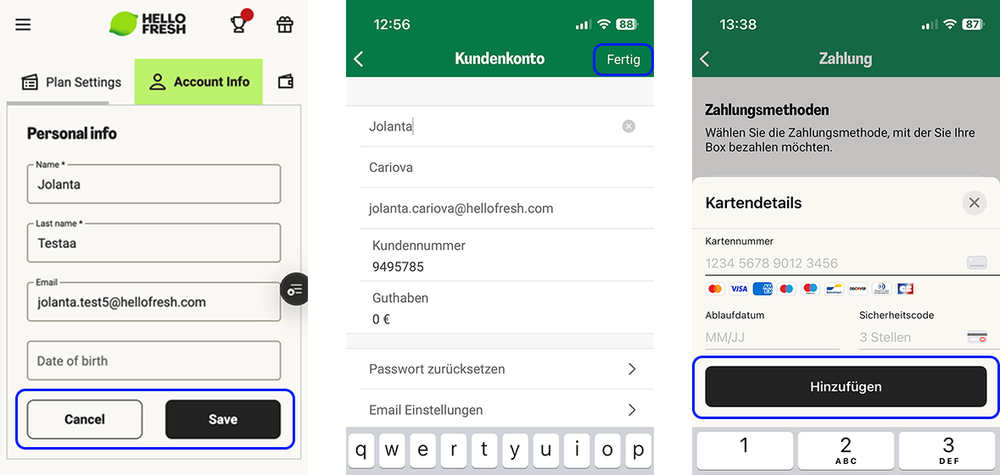
Implemented save pattern
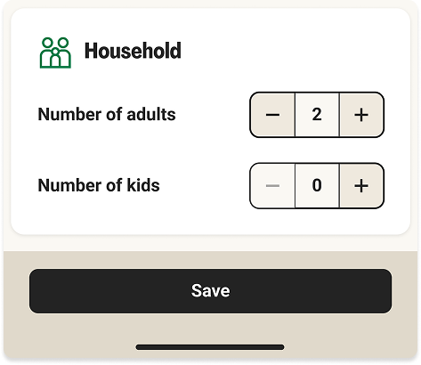
Attributes selection
MVP attributes selector
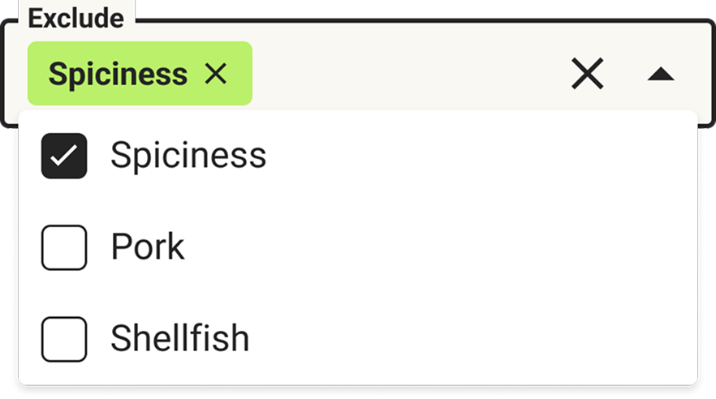
New attributes selection pattern
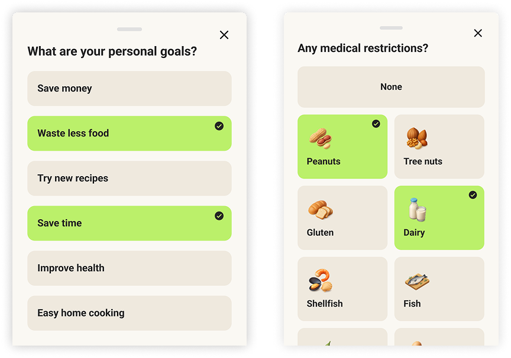
Localization
For this project I took ownership of translation keys and localization handling for the Food Profile page and its related settings.
The goal was to ensure that the design works reliably across all supported languages and markets, and that longer translations would not break layouts or components.
During this process I also identified several localization-related design issues in the international signup funnel. I raised these concerns and proposed design updates to ensure the experience scales better across markets.
Previous exclusions layout
Observed in screen recordings
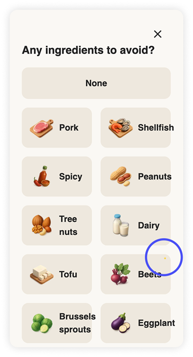
New exclusions layout
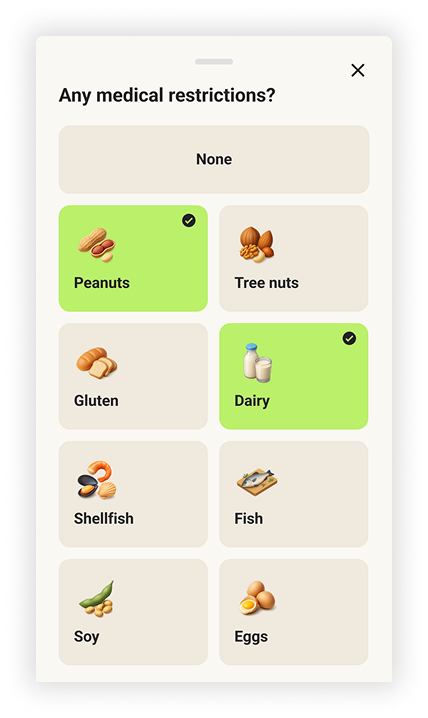
Multi-brand approach
Designing for 5 brands and over 15 languages required ensuring that the solution was fully aligned with the design system and adaptable across markets.
I worked closely with teams to verify that components were implemented consistently across React Native, Web, and Figma, resolving discrepancies and defining a clear source of truth.
For example, several components had mismatches between design files and implementation. I collaborated with the team to align them and ensure consistent behavior across brands.
Additionally, some components reused from the funnel acquisition quiz had originally been designed with the US market in mind. Since Food Profile was planned as an international feature, I initiated discussions with other teams to adapt these components for future international releases.
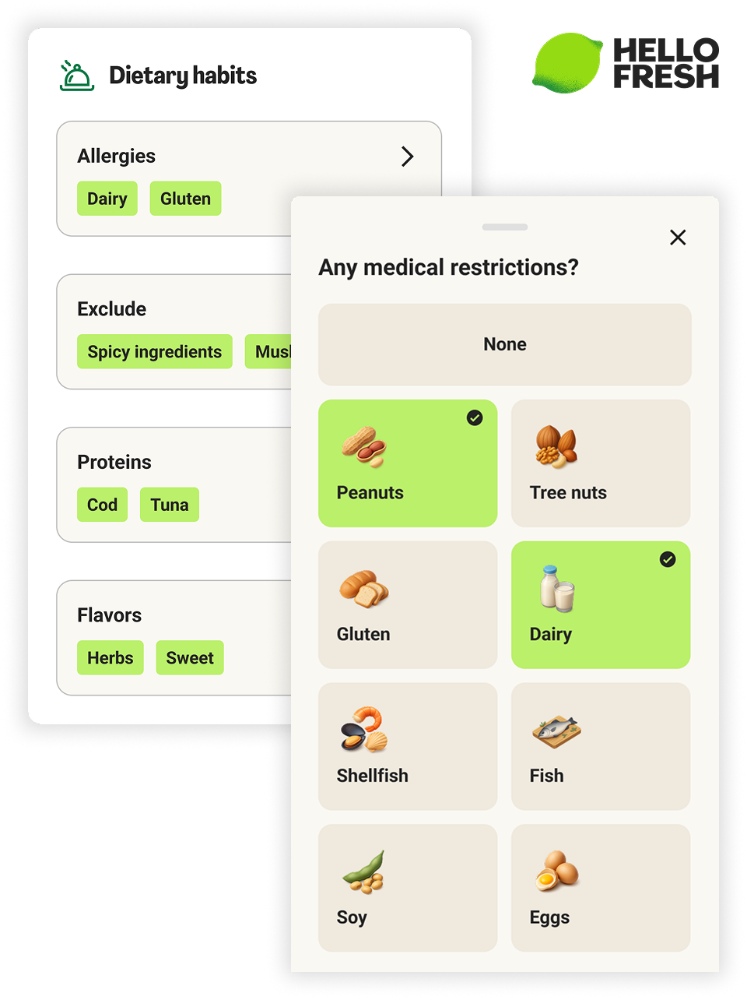
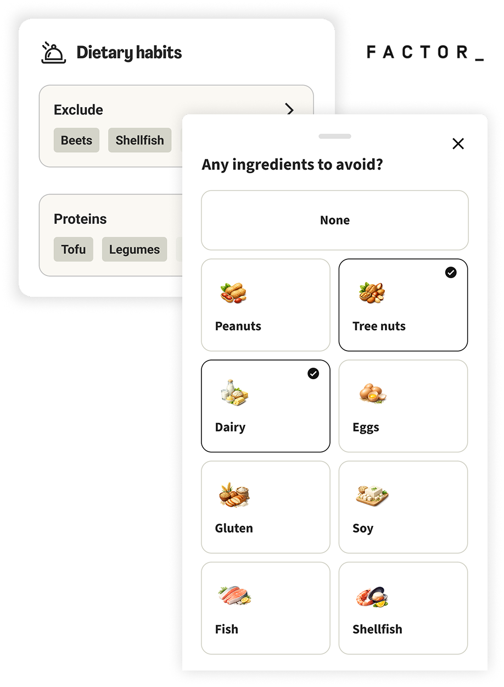
HelloFresh plan size concept change proposal
HelloFresh operates on a plan size model where customers select the number of people in their household and how many meals per week they want to receive. The entire menu and subscription structure is based on this concept.
Together with my product counterpart, we explored an improvement to this model. We proposed that household composition should be separated from subscription size.
Customers ultimately pay for how many servings they receive, not for the household configuration itself. Based on this, we proposed:
This change clarified what customers are actually paying for while allowing Food Profile to focus on household preferences and dietary needs.
I also advocated for removing a legacy menu preference setting in the plan size configuration. This setting differed between markets and mixed several unrelated preferences. Instead, we moved these values into the Food Profile, making the plan settings clearer and focusing Food Profile specifically on customer food preferences.
Previous plan size settings
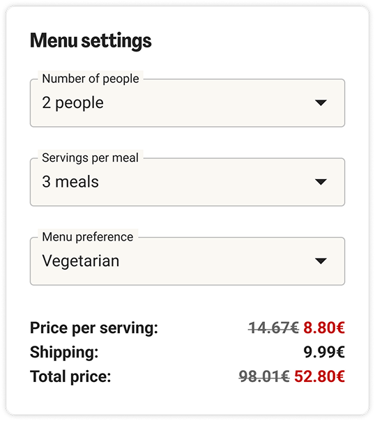
New plan size settings
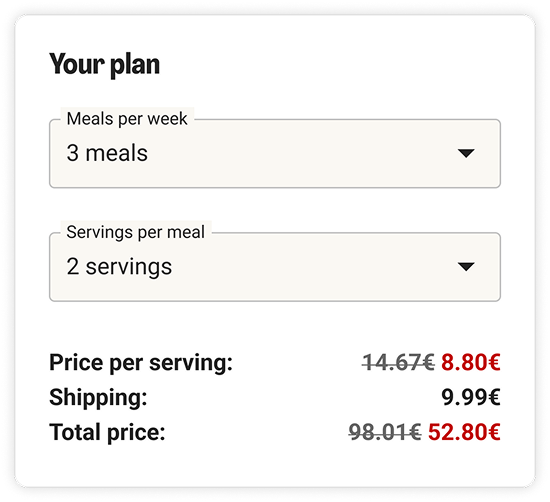
Indication in the menu
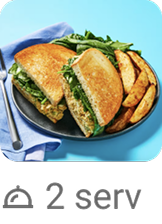
Food profile updates in progress
Further work focuses on expanding Food Profile across all HelloFresh international markets and brands.
Upcoming improvements include:
Multi-member household profiles
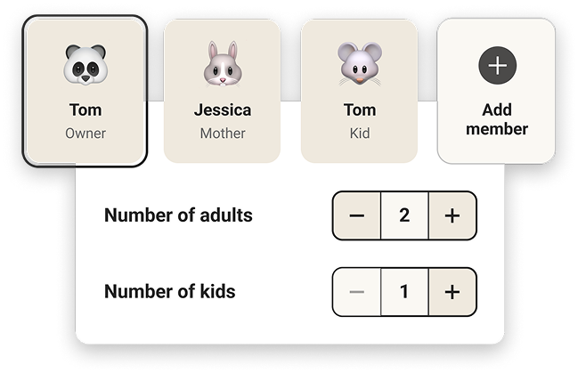
Food profile reassurance
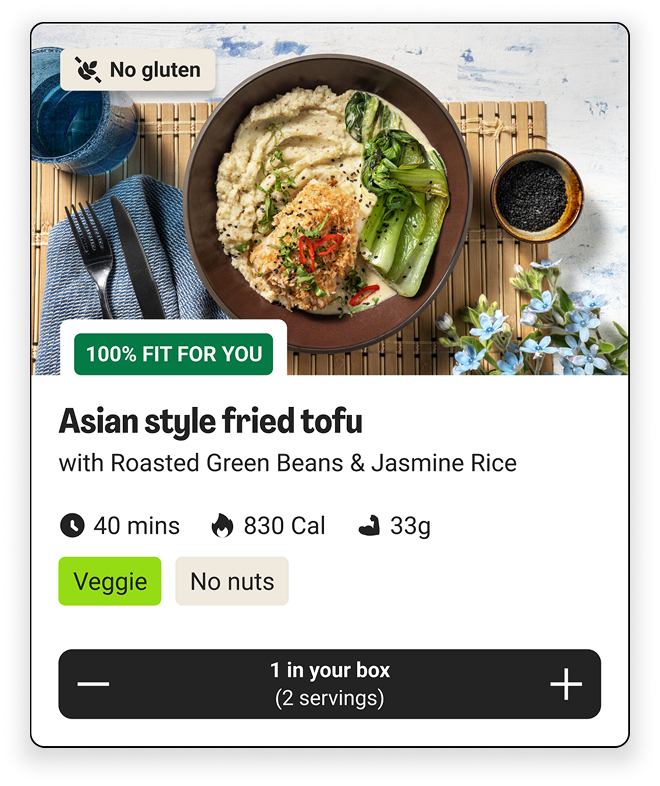
Contextual prompts
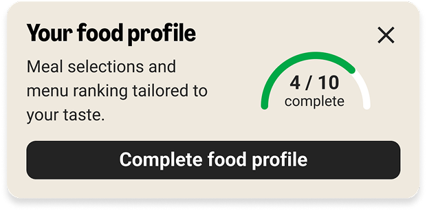